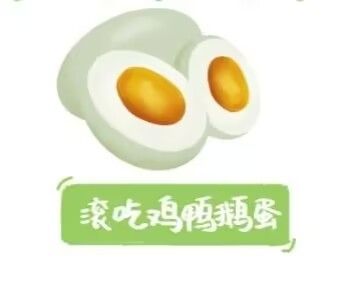
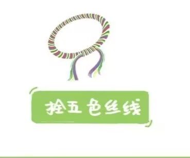
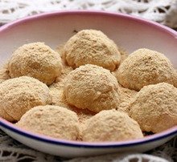

端午是什么 端午节（Dragon Boat Festival），又称端阳节、龙舟节、重五节、天中节等，日期在每年农历五月初五，是集拜神祭祖、祈福辟邪、欢庆娱乐和饮食为一体的民俗大节。 “端午”的“端”字本义为“正”，“午”为“中”。“端午”，“中正”也，这天午时则为正中之正。 端午节的名称在中国所有传统节日当中叫法最多，达二十多个，如有龙舟节、重午节、端阳节、端五节、重五节、当五汛、天中节、夏节、艾节、上日、五月节、菖蒲节、天医节、草药节、浴兰节、午日节、地腊节、正阳节、龙日节、粽子节、五黄节、诗人节、躲午节、解粽节、端礼节、五月初五、五月当午等等。 端午节的起源 端午节，起源于中国，最初是上古先民以龙舟竞渡形式祭祀龙祖的节日。因传说战国时期的楚国诗人屈原在端午抱石跳汨罗江自尽，后来人们亦将端午节作为纪念屈原的节日；个别地方也有纪念伍子胥、曹娥及介子推等说法。总的来说，端午节起源于江浙地区吴越部族的龙图腾祭祀，注入夏季时令“祛病防疫"风尚，把端午视为“恶月恶日”起于北方，附会纪念屈原等历史人物纪念内容，最后形成如今端午节文化内涵。 |
|
| 端午节两个标志性习俗是扒龙舟和食粽。闻一多先生认为端午节是古百越族举行龙图腾崇拜活动的节日，他在《端午考》及《端午节的历史教育》（见《闻一多全集》）两篇论文中详细论证了他的观点。 [52] 当时龙已是吴越民族的图腾，后来演化成了全民族的图腾崇拜；就是在祭龙的仪式中，才逐渐有了划龙舟的习惯。 [12] 吴越先民以“龙”为图腾，而且每年在端午这天，举行一次盛大的图腾祭；其中有一项活动便是在急鼓声中以刻画成龙形的独木舟，在水面上作竞渡祭龙神，也给自己游戏取乐，这便是龙舟竞渡习俗的由来。 | |
| 中华文化源远流长、博大精深，古老节日是传统文化的重要载体，古老节日的形成蕴含了深邃丰厚的文化内涵，古老节日重视祖先神灵信仰与祭祀活动，祖先神灵信仰是古老传统节日的核心。端午习俗甚多，形式多样、内容丰富多彩，热闹喜庆。仲夏端午，飞龙在天，龙气旺盛，百邪皆避。端午节是集祈福辟邪、欢庆娱乐和饮食为一体的民俗大节。端午习俗内容丰富多彩，这些节俗围绕着祭龙、祈福、攘灾等形式展开，寄托了人们迎祥纳福、辟邪除灾的愿望。端午节自古就是食粽与扒龙舟的喜庆日子，端午节时热闹的龙舟表演，欢乐的美食宴会，都是庆贺佳节的体现。”返回顶部 | |
端午节在历史发展演变中杂揉了多种民俗为一体，全国各地因地域文化不同而又存在着习俗内容或细节上的差异。端午习俗主要有扒龙舟、祭龙、采草药、挂艾草与菖蒲、拜神祭祖、洗草药水、打午时水、浸龙舟水、食粽、放纸鸢、睇龙船、拴五色丝线、薰苍术、佩香囊等等。扒龙舟活动在中国南方沿海一带十分盛行，传出国外后深受各国人民喜爱并形成了国际比赛。端午食粽之习俗，自古以来在中国各地盛行不衰，已成了中华民族影响最大、覆盖面最广的民间饮食习俗之一。端午节期间通过传统民俗活动展演，既能丰富群众精神文化生活，又能很好的传承和弘扬传统文化。端午文化在世界上影响广泛，世界上一些国家和地区也有庆贺端午的活动。
由于地域广大，加上许多故事传说，于是不仅产生了众多相异的节名，而且各地也有着不尽相同的习俗。古人还把端午这天正好逢上夏至看作吉祥的年份，称为“龙花会”，有“千载难逢龙花会”之说。夏季是阴阳二气相争的时节，阳动于上、阴迫于下，午月纯阳正气，为阴邪所惧。夏季也是一个驱除瘟疫的季度，仲夏端午阳气旺盛，万物至此皆盛，是草药一年里药性最强的一天，端午这天采的草药祛病防疫最为灵验、有效。
| 粽，即“粽籺”，俗称粽子，主要材料是糯米、馅料，用箬叶（或柊叶）包裹而成，形状多样，有尖角状、四角状 | |
| 扒龙舟历史悠久，是多人集体划桨竞赛。龙舟竞渡分为请龙、祭龙神、游龙和收龙等几个版块。龙舟竞渡前一般都要举行隆重的祭祀仪式，先要请龙、祭神。 | |
| 纸鸢，在竹篾等骨架上糊上纸或绢，拉着系在上面的长线，趁着风势可以放上天空，属于一种单纯利用空气动力的飞行器。在中国南方一带，端午节儿童放纸鸢称为“放殃”。 | |
| 香囊内有朱砂、雄黄、香药、外包以私布，清香四溢，再以五色丝线弦扣成索，作各种不同形状,结成一-串,形形色色，玲珑可爱。在中国某些南方城市，青年男女还用香囊来表达爱意。 | |
|  | 香囊内有朱砂、雄黄、香药、外包以私布，清香四溢，再以五色丝线弦扣成索，作各种不同形状,结成一-串,形形色色，玲珑可爱。在中国某些南方城市，青年男女还用香囊来表达爱意。 |
| 在端午节布置种种可驱邪祛病的花草人们把插艾草和菖蒲作为端午节重要内容之一。往往会在家门口挂几株艾草，由于艾草特殊的香味，人们用它来驱病、防蚊、辟邪。 | |
|  | 中国传统文化中，象征五方五行的五种颜色"青、红、白、黑、黄"被视为吉祥色。端午以五色丝线系臂曾是很流行的节俗。返回顶部 |
端午节食粽是中国的传统习俗，粽的形状很多，品种各异，一般还有正三角形、正四角形、尖三角形、方形、长形等各种形状。由于中国各地风味不同，主要有甜、咸两种。 |
端午饮雄黄酒的习俗，从前在长江流域地区极为盛行。用研磨成粉末的雄黄泡制的白酒或黄酒。雄黄可以用做解毒剂、杀虫药。于是古代人就认为雄黄可以克制蛇、蝎等百虫，“善能杀百毒、辟百邪、制蛊毒，人佩之，入山林而虎狼伏，入川水而百毒避”。 |
| 江浙一带有端午节吃“五黄”的习俗。五黄，是指黄鱼、黄瓜、黄鳝、鸭蛋黄、雄黄酒（雄黄酒有毒性，一般都喝普通的黄酒代替雄黄酒）。也有其它说法，咸鸭蛋可以用黄豆替代。农历五月，江南人称五黄月。 |  |
端午节是吉林省延边朝鲜族人民隆重的节日。这一天最有代表性的食品是清香的打糕。打糕，就是将艾蒿与糯米饭，放置于独木凿成的大木槽里，用长柄木捶打制而成的米糕。这种食品很有民族特色，又可增添节日的气氛。 |
福建晋江地区，端午节家家户户还要吃“煎堆”，就是用面粉、米粉或番薯粉和其他配料调成浓糊状煎成。相传古时闽南一带在端午节之前是雨季，阴雨连绵不止，民间说天公穿了洞，要“补天”。端午节吃了“煎堆”后雨便止了，人们说把天补好了。这种食俗由此而来。 |
【各国端午节美食 】
韩国：艾草糕+樱桃茶+醍醐汤
在韩国，端午节用于祭祀祖先、祈求丰年、保佑身体平安。端午节期间韩国人多喜食艾草饼与艾草糕、品樱桃茶、喝醍醐汤。
日本：粽子/槲叶糕+菖蒲酒
粽子在日本古代称为“茅卷”，呈圆锥形。最初是将粳米蒸熟捣碎成年糕状后用茅叶包裹，再如水煮熟。后来改用菖蒲叶、竹叶、芦苇叶等包裹，制作方法也逐渐多样化。
新加坡：娘惹粽
每年端午节，新加坡人也有赛龙舟、吃粽子的习俗。其中娘惹粽是新加坡特有的端午美食。独特香料“芫荽粉”配上酱油，精心腌制上等瘦肉，再配以香甜爽口的冬瓜条混炒，最后裹入透白晶莹的糯米之中。
越南：黄姜糯米饭+方形粽子
端午节时，越南人会准备黄姜糯米饭，来感谢祖先的恩惠给子孙后代带来丰衣足食的生活，并祈求祖先保佑风调雨顺，五谷丰登。此外，越南人认为黄姜饭里的黄姜有避瘟疫、解毒和防疮等功效。返回顶部